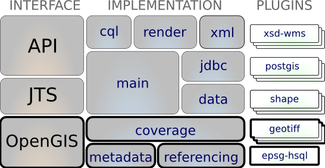

Coverage¶
The gt-coverage module provides a way to build and use highly structured grids of numeric values such as imagery data, for instance GeoTIFF format files, or multi-dimensional matrix data, like that found in NetCDF format files.
The gt-coverage module is responsible for:
- implementation of the coverage interfaces from gt-opengis such as GridCoverage2D and Format
- Bridging between Java Advanced Imaging, JAI Image IO and Java Image facilities and the geospatial idea of a GridCoverage
- Recognising additional formats available on the CLASSPATH using GridFormatFinder
The module supports the use of coverage information (ie raster) from a range of sources.
Tutorial
Maven:
<dependency>
<groupId>org.geotools</groupId>
<artifactId>gt-coverage</artifactId>
<version>${geotools.version}</version>
</dependency>
Contents
Contents:
Format plugins:
Unsupported plugins: